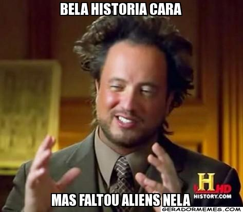

Mistérios da Segunda Guerra
historia
O termo foo fighter foi usado pelos pilotos da infantaria aliada para designar os misteriosos fenômenos aéreos vistos nas missões do Teatro de Operações do Pacífico e nos céus da Europa. As primeiras aparições ocorreram em novembro de 1944, quando os pilotos que sobrevoavam a Alemanha reportaram terem visto objetos brilhantes voando em alta velocidade e acompanhando os aviões. Esses misteriosos objetos foram descritos como bolas de fogo brilhantes vermelhas, brancas ou alaranjadas. Alguns pilotos disseram que elas pareciam com luzes da árvore de Natal, sendo que elas variavam de tamanho entre cerca de 91 metros e 30 centímetros. Os foo fighters não podiam ser derrubados ou superados. Santa fé - Ghost and history tours Já os militares levaram as aparições a sério, suspeitando que as estranhas aparições fossem uma arma secreta alemã. Entretanto, investigações posteriores revelaram que os pilotos alemães e japoneses também reportam terem visto objetos semelhantes. Durante os tempos de guerra, o termo foo fighter se tornou sinônimo de qualquer visão de um OVNI. Muitas pessoas especularam o envolvimento extraterrestre. Durante a Segunda Guerra, esses acontecimentos foram amplamente estudados. Até mesmo cientistas renomados, tais como David Griggs, Luis Alvarez e H.P. Robertson, também os avaliaram. Todavia, o fenômeno nunca foi explicado, uma vez que a maioria das informações sobre o acontecido foi mantida sobre sigilo e nunca foi revelada por nenhuma inteligência militar.